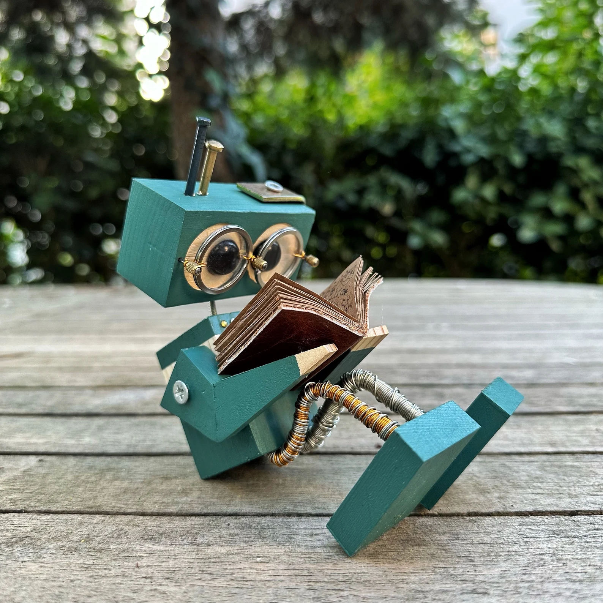

Robotshowroom

Lampje-op-het-hoofd robot Bright
Hij heeft altijd een 'bright idea'. Alleen… meestal nét nadat je al op 'submit' hebt geklikt.
Klik voor inspiratie
Leesrobot (zeldzaam!) Docs
Hij leest de docs. Vrijwillig. We hebben het gemeld aan de wetenschap. Dit is een uniek specimen. Niet twijfelen bij deze, hij zoekt alles voor je op. Tot in de details!
Open de handleiding
Nagel in hoofdrobot Swag
Ziet er cool uit, praat in CSS-variabelen en weigert inline styles. Respect, maar ook: help.
Inspecteer de swag
Zwemrobot met flamingo Splash
Hij zei: "Ik ga even deployen." We dachten: production. Hij bedoelde: zwembad. Flamingo inbegrepen.
Laat 'm dobberen
Robot met hond aan de lijn Walkies
Probeert een wandeling te maken, maar elke 3 meter doet z'n hond een pull request. Zonder beschrijving.
Check de pootafdrukken
Kerstrobot met lichtjes Disco
Elke bug laat een lampje knipperen. Op het einde van de sprint: disco. Op het einde van de nacht: migraine.
Zet 'm op 'glow'